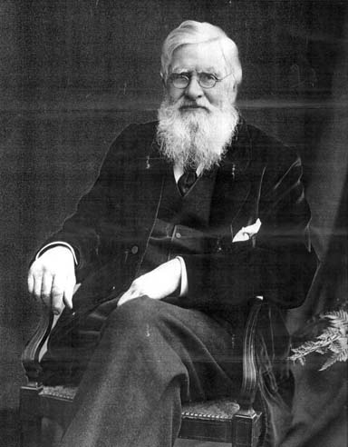

|  Alfred Russel Wallace. This venerable naturalist outlived Darwin and became the grand old man of science until he died in 1913 |
As a young man, Wallace taught in the Collegiate School, Leicester. While in Leicester, a chance meeting with Henry Walter Bates in the public library led to a close friendship, and to their plan for a joint expedition to the Brazilian Amazon. Wallace on species: "In estimating these numbers [i.e. of species in different regions] I have had the usual difficulty to encounter, of determining what to consider species and what varieties. ... The rule, therefore, I have endeavoured to adopt is, that when the difference between two forms inhabiting separate areas seems quite constant, when it can be defined in words, and when it is not confined to a single peculiarity only, I have considered such forms to be species. When, however, the individuals of each locality vary among themselves, so as to cause the distinctions between the two forms to become inconsiderable and indefinite, or where the differences, though constant, are confined to one particular only, such as size, tint, or a single point of difference in marking or in outline, I class one of the forms as a variety of the other." From pp. 4 and 12 in: A.R. Wallace (1865). On the phenomena of variation and geographical distribution as illustrated by the Papilionidae of the Malayan region. Transactions of the Linnean Society of London 25: 1-71. Today, the original is available online, at archive.org, and also various other editions, for instance the shorter version, as printed in Wallace's book "Contributions to the Theory of Natural Selection" (1871), from the University of Michigan. See Mallet 2009 for a discussion of the importance of this paper for understanding species and speciation. Wallace, of course, had independently discovered the principle of natural selection in 1858. But he always revered Darwin, even though Darwin took most of the credit after his book "On the Origin of Species" (1859). Here is an interesting observation by Wallace, in 1809, on the occasion of Darwin's centenary:
Bibliography
|